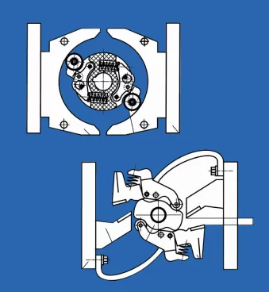

Ремонт
Специалисты сервисной службы при необходимости осуществят гарантийный\негарантийный ремонт и помогут восстановить технические характеристики оборудования.
Услуги по ремонту могут быть оказаны как на территории клиента, так и непосредственно на АО «Контактор» имеющего полный производственный цикл и аккредитованный испытательный центр электрооборудования в г.Ульяновске, что позволяет нам гарантировать высокое качество сервисных услуг.
-

Запасные части
Оригинальные запасные части от производителя гарантируют оптимальную эксплуатационную готовность, надежность и безотказную работу оборудования.
Представитель службы сервиса осуществит замену на объекте или предоставит пошаговую инструкцию для самостоятельной работы.
Благодаря услугам по поставке новых и замене старых деталей АО «Контактор» обеспечивает долгосрочную работу оборудования заказчика.
-
Модернизация
Модернизация –это перспективное решение завтрашнего дня с целью продления срока службы оборудования.
Если в процессе длительной эксплуатации техника на проходила модернизацию, то рано или поздно в ее работе происходят сбои либо она вовсе выходит из строя.
Специалисты сервисного отдела подберут лучшее ретрофит-решение для модернизации устаревшего оборудования.
Это позволит избежать капитальных вложений и полной замены оборудования.
Специалисты сервисной службы АО «Контактор» окажут техническую поддержку в процессе проведения работ, оптимизируют затраты и увеличат срок службы вашего оборудования.
-
Планово-предупредительное обслуживание
Своевременный Планово-предупредительный ремонт — это комплекс мероприятий предупредительного характера, который позволяет сократить расходы на ремонт, минимизировать потери при возникновении отказа оборудования и увеличит время безотказной работы. Специалисты сервисной службы АО «Контактор» готовы провести профилактическое выездное обслуживание у вас на объекте.